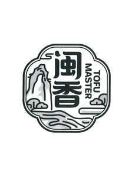
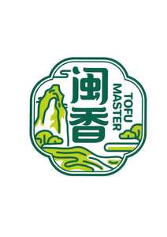

Trade Mark Journal No.2025/037 12 September 2025
UK00004256352 29 August 2025 (29,39,40,43)
Mark 1

Mark 2

- Class 29
- Tofu; Uncongealed tofu (Tofu nao); Tofu patties; Fermented tofu; Yuba [tofu skin]; Tofu skin (Yuba); Fried tofu pieces (abura-age); Abura-age [pieces of fried tofu]; Tofu-based snacks; Tofu-based snack food; Cooked dish consisting primarily of tofu; Freeze-dried tofu pieces (kohri-dofu).
- Class 39
- Packing of food; Packaging of food; Packing of food products; Storage of food; Food delivery; Delivery of food.
- Class 40
- Food processing; Food and drink preservation; Food canning; Pasteurizing of food and beverages; Irradiation of food; Food smoking; Preservation of food; Food and beverage treatment; Food grinding; Food milling; Pasteurization services for food and beverages; Treatment of cooked foods; Processing of Cooked foods.
- Class 43
- Preparation of food and drink; Preparation of food and beverages; Food preparation; Providing food and drink; Takeaway food and drink services; Serving food and drinks; Services for the preparation of food and drink; Food and drink preparation services; Catering for the provision of food and beverages; Hospitality services food and drink; Catering of food and drink.
Xunda Zhou
Representative: Maggie Wong & Co Solicitors Limited